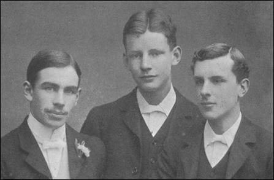
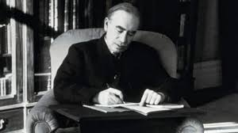
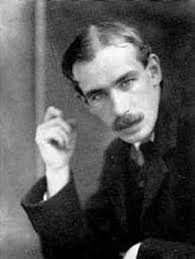
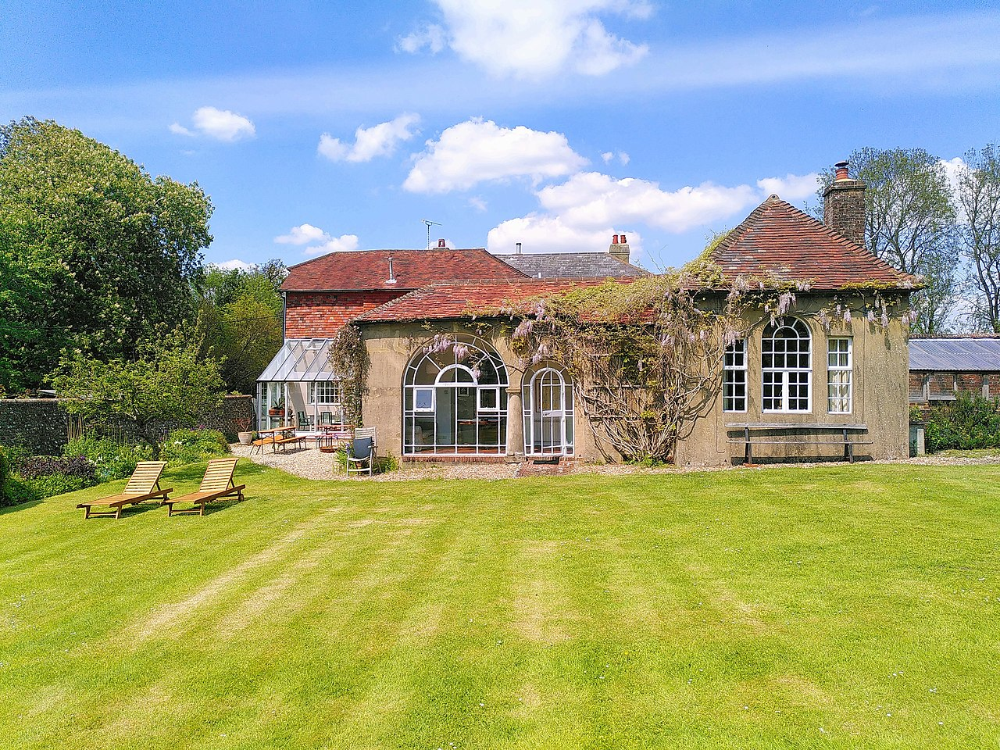

- Биография
- Библиография
- Некоторые публикации

- Подробнее
- Паспорт
- Алгоритмическая задача
- На главную
БиографияРанние годыКейнс родился в Кембридже в семье известного экономиста, преподователя экономики, логики и философии в Кембриджском университете, Джона Невила Кейнса, и Флоренс Ады Браун - успешной писательницы, занимавшейся также и общественной деятельностью (она была первой женщиной-мером Кембриджа). Джон Мейнард рос в университетской среде, на что его прабабушка однажды сказала: "Ожидается, что ты вырастешь очень умным, поскольку всё время живёшь в Кембридже"  Кейнс был очень высоким, примерно, 198 см. Он был успешным инвестором и сумел сколотить неплохое состояние.
После краха фондового рынка 1929 года Кейнс оказался на грани банкротства, но вскоре сумел восстановить своё богатство.
Некоторые публикации1. 1915 - Экономика войны в Германии (The Economic Journal) 2. 1926 - Принцип невмешательства и коммунизм (New Republic) 3. 1929 - Сможет ли Ллойд Джордж сделать Это? (Nation and Athenaeum) 4. 1931 - Конец золотого стандарта (Sunday Express)  Личная жизньВ октябре 1918 года Кейнс встретил русскую балерину дягилевской антрепризы Лидию Лопухову на первых послевоенных сезонах в Лондоне, в 1921 году Кейнс влюбился в Лидию, когда она танцевала в дягилевской постановке «Спящей красавицы» Чайковского в лондонском театре Альгамбра. 4 августа 1925 года они поженились, как только Лидия получила развод от своего первого мужа. В том же году Дж. М. Кейнс совершил свою первую поездку в СССР на празднование 200-летия Академии наук, а также стал балетным меценатом и даже сочинял балетные либретто. Кроме того, Дж. М. Кейнс был в СССР ещё в 1928 и 1936 годах с частными визитами. Брак Кейнса, по всей видимости, был счастливым, хотя из-за проблем медицинского характера супруги не могли иметь детей. Лидия пережила Кейнса и умерла в 1981 году
КарьераС 1915 по 1919 год работал в Министерстве финансов. Участвовал в мирных переговорах в Париже и предложил свой план по послевоенному восстановлению экономики в Европе. Но его план не был учрежден, так как он выступал за восстановление экономики в Германии, а не за усиление репараций. С 1919 года все больше времени проводит в Лондоне: состоял в редколлегии журналов- еженедельника «Nation», журнала «Economic Journal» и правлении финансовых компаний, занимался консультированием правительства. Также успешно играл на бирже. Долгое время занимался исследованием вопросов финансов, золотого стандарта и валютных курсов. Имел членство в Королевской комиссии по промышленности и финансам и в Экономическом консультативном совете. В 1940 году получил членство в Консультативном комитете при Министерстве финансов по военным проблемам, потом стал советником министра. Спустя 2 года ему даровали титул барона. В 1944 году его избрали президентом Эконометрического общества. В период Второй мировой войны разрабатывал концепцию Бреттон-Вудской системы и выдвинул идею создания системы, занимающийся регулированием валютных курсов. В 1946 году был одним из создателей Международного валютного фонда.  СмертьИзвестен среди своих знакомых, как страшный трудоголик. Перенёс серию сердечных приступов во время англо-американских переговоров в Джорджии (процесс этот он называл "абсолютным адом") Умер 21 апреля 1946 года от инфаркта миокарда в возрасте 62 лет в своём фермерском домике в графстве Сассекс. Его пережили его родители, брат, жена и племянники  |